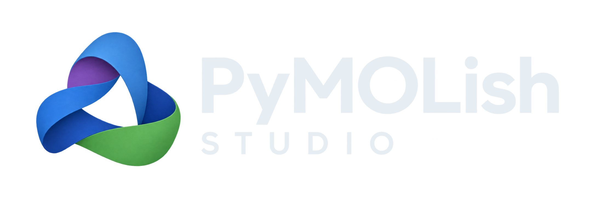
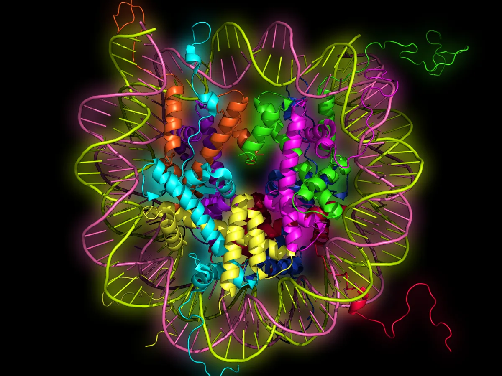
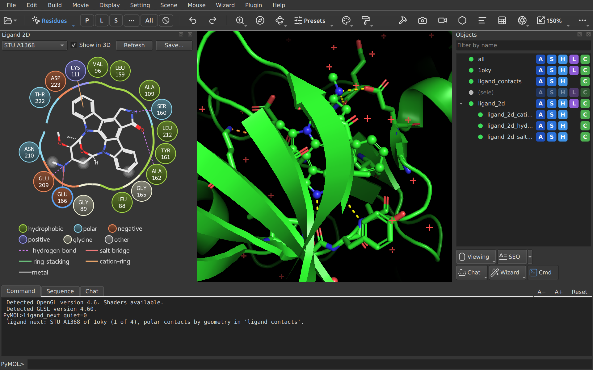

Ligands
Ligand 2D viewer
Jump from ligand to ligand. See the pocket and every contact, drawn flat and in 3D.
- Next ligand
- H-bonds
- Salt bridges
- π-stacking
- Click 2D → find in 3D

A faster, modern fork of Open-Source PyMOL™. New window, new looks, same scripts. Free for Linux, Windows and macOS.


Against PyMOL 3.2 on the same machine, 2026-11-19. How it was measured
Click any picture to enlarge it, or ▶ to watch the clip.
Jump from ligand to ligand. See the pocket and every contact, drawn flat and in 3D.
Align chains, color by identity, select in the alignment and see it in 3D. Fit the structures in one click.
Cartoons, balls and sticks, glossy, glass, frosted and clay surfaces. Lights with outlines, glow, floors and mirrors.
Pick the colors new objects and chains get. Pastel, neon, colorblind-safe, editor themes, or your own.
Ask in plain words. The model runs reviewed commands in your session, and every turn can be undone.
Objects as rows, properties as columns. Import a spreadsheet, sort, rate with stars, step through in 3D.
Store views, line them up, add a turn, export a video.
One click in the Presets menu. Same molecule, same colors: only the preset changes.
Ray traced in pymolish. Each one is a preset, a palette and a light from the menus.
Ready to run. No Python needed.
Or build from source:
git clone https://github.com/adrian-jasinski/pymolish-studio.git cd pymolish-studio ./install pixi run -e py313 pymolish
Preview builds, not signed yet: Windows and macOS may warn on first start.